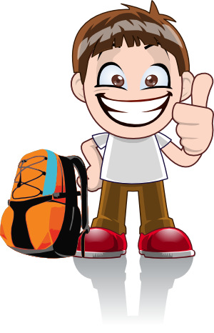

Consejos básicos
Hacer senderismo con seguridad no es difícil, pero las acciones y decisiones que tomes en el medio natural son tu responsabilidad. Por ello conviene seguir una serie de pautas:
PLANIFICA LA ACTIVIDAD:
EQUIPA TU MOCHILA:

ACTÚA CON PRUDENCIA: